libpsl − Public Suffix List library functions
Stable, unless otherwise indicated
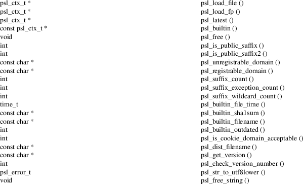
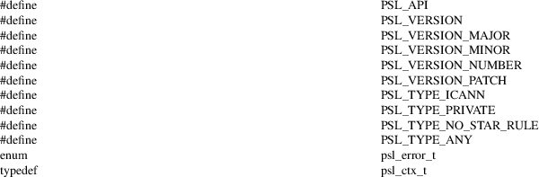
#include <libpsl.h>
Public Suffix List [1] library functions.
psl_load_file ()
psl_ctx_t *
psl_load_file (const char
*fname);
This function loads the public suffixes file named fname . To free the allocated resources, call psl_free().
The suffixes are expected to be UTF−8 encoded (lowercase + NFKC) if they are international.
Parameters
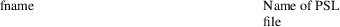
Returns
Pointer to a PSL context or NULL on failure.
Since: 0.1
psl_load_fp ()
psl_ctx_t *
psl_load_fp (FILE *fp);
This function loads the public suffixes from a FILE pointer. To free the allocated resources, call psl_free().
The suffixes are expected to be UTF−8 encoded (lowercase + NFKC) if they are international.
Parameters
Returns
Pointer to a PSL context or NULL on failure.
Since: 0.1
psl_latest ()
psl_ctx_t *
psl_latest (const char
*fname);
This function loads the the latest available PSL data from either
• fname (application specific filename, may be NULL)
• location specified during built−time (filename from ./configure −−with−psl−distfile)
• built−in PSL data (generated from ./configure −−with−psl−file)
• location of built−in data (filename from ./configure −−with−psl−file)
If none of the above is available, the function returns NULL.
To free the allocated resources, call psl_free().
Parameters
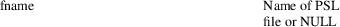
Returns
Pointer to a PSL context or NULL on failure.
Since: 0.16
psl_builtin ()
const
psl_ctx_t *
psl_builtin (void);
This function returns the PSL context that has been generated and built in at compile−time. You don't have to free the returned context explicitly.
The builtin data also contains punycode entries, one for each international domain name.
If the generation of built−in data has been disabled during compilation, NULL will be returned. When using the builtin psl context, you can provide UTF−8 (lowercase + NFKC) or ASCII/ACE (punycode) representations of domains to functions like psl_is_public_suffix().
Returns
Pointer to the built in PSL data or NULL if this data is not available.
Since: 0.1
psl_free ()
void
psl_free (psl_ctx_t *psl);
This function frees the the PSL context that has been retrieved via psl_load_fp() or psl_load_file().
Parameters
Since: 0.1
psl_is_public_suffix ()
int
psl_is_public_suffix (const psl_ctx_t
*psl,
const char *domain);
This function checks if domain is a public suffix by the means of the Mozilla Public Suffix List [2] .
For cookie domain checking see psl_is_cookie_domain_acceptable().
International domain names have to be either in UTF−8 (lowercase + NFKC) or in ASCII/ACE format (punycode). Other encodings likely result in incorrect return values. Use helper function psl_str_to_utf8lower() for normalization domain .
psl is a context returned by either psl_load_file(), psl_load_fp() or psl_builtin().
Parameters
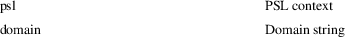
Returns
1 if domain is a public suffix, 0 if not.
Since: 0.1
psl_is_public_suffix2 ()
int
psl_is_public_suffix2 (const psl_ctx_t
*psl,
const char *domain,
int type);
This function checks if domain is a public suffix by the means of the Mozilla Public Suffix List [2] .
type specifies the PSL section where to perform the lookup. Valid values are PSL_TYPE_PRIVATE, PSL_TYPE_ICANN, PSL_TYPE_NO_STAR_RULE, and PSL_TYPE_ANY.
PSL_TYPE_NO_STAR_RULE switches of the 'prevailing star rule' (see List [3] under 'Algorithm' 2.). Applying the flag means that TLDs not explicitly listed in the PSL are *not* treated as public suffixes.
International domain names have to be either in UTF−8 (lowercase + NFKC) or in ASCII/ACE format (punycode). Other encodings likely result in incorrect return values. Use helper function psl_str_to_utf8lower() for normalization domain .
psl is a context returned by either psl_load_file(), psl_load_fp() or psl_builtin().
Parameters
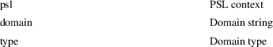
Returns
1 if domain is a public suffix, 0 if not.
Since: 0.1
psl_unregistrable_domain ()
const
char *
psl_unregistrable_domain (const psl_ctx_t
*psl,
const char *domain);
This function finds the longest public suffix part of domain by the means of the Mozilla Public Suffix List [2] .
International domain names have to be either in UTF−8 (lowercase + NFKC) or in ASCII/ACE format (punycode). Other encodings likely result in incorrect return values. Use helper function psl_str_to_utf8lower() for normalization domain .
psl is a context returned by either psl_load_file(), psl_load_fp() or psl_builtin().
Parameters
Returns
Pointer to longest public suffix part of domain or NULL if domain does not contain a public suffix (or if psl is NULL).
Since: 0.1
psl_registrable_domain ()
const
char *
psl_registrable_domain (const psl_ctx_t
*psl,
const char *domain);
This function finds the shortest private suffix part of domain by the means of the Mozilla Public Suffix List [2] .
International domain names have to be either in UTF−8 (lowercase + NFKC) or in ASCII/ACE format (punycode). Other encodings likely result in incorrect return values. Use helper function psl_str_to_utf8lower() for normalization domain .
psl is a context returned by either psl_load_file(), psl_load_fp() or psl_builtin().
Parameters
Returns
Pointer to shortest private suffix part of domain or NULL if domain does not contain a private suffix (or if psl is NULL).
Since: 0.1
psl_suffix_count ()
int
psl_suffix_count (const psl_ctx_t
*psl);
This function returns number of public suffixes maintained by psl . The number of exceptions within the Public Suffix List are not included.
If the information is not available, the return value is −1 (since 0.19). This is the case with DAFSA blobs or if psl is NULL.
Parameters
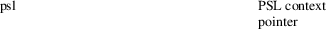
Returns
Number of public suffixes entries in PSL context or −1 if this information is not available.
Since: 0.1
psl_suffix_exception_count ()
int
psl_suffix_exception_count (const psl_ctx_t
*psl);
This function returns number of public suffix exceptions maintained by psl .
If the information is not available, the return value is −1 (since 0.19). This is the case with DAFSA blobs or if psl is NULL.
Parameters
Returns
Number of public suffix exceptions in PSL context or −1 if this information is not available.
Since: 0.1
psl_suffix_wildcard_count ()
int
psl_suffix_wildcard_count (const psl_ctx_t
*psl);
This function returns number of public suffix wildcards maintained by psl .
If the information is not available, the return value is −1 (since 0.19). This is the case with DAFSA blobs or if psl is NULL.
Parameters
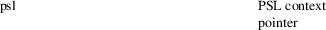
Returns
Number of public suffix wildcards in PSL context or −1 if this information is not available.
Since: 0.10.0
psl_builtin_file_time ()
time_t
psl_builtin_file_time (void);
This function returns the mtime of the Public Suffix List file that has been built in.
If the generation of built−in data has been disabled during compilation, 0 will be returned.
Returns
time_t value or 0.
Since: 0.1
psl_builtin_sha1sum ()
const
char *
psl_builtin_sha1sum (void);
This function returns the SHA1 checksum of the Public Suffix List file that has been built in. The returned string is in lowercase hex encoding, e.g. "2af1e9e3044eda0678bb05949d7cca2f769901d8".
If the generation of built−in data has been disabled during compilation, an empty string will be returned.
Returns
String containing SHA1 checksum or an empty string.
Since: 0.1
psl_builtin_filename ()
const
char *
psl_builtin_filename (void);
This function returns the file name of the Public Suffix List file that has been built in.
If the generation of built−in data has been disabled during compilation, an empty string will be returned.
Returns
String containing the PSL file name or an empty string.
Since: 0.1
psl_builtin_outdated ()
int
psl_builtin_outdated (void);
This function checks if the built−in data is older than the file it has been created from. If it is, it might be a good idea for the application to reload the PSL. The mtime is taken as reference.
If the PSL file does not exist, it is assumed that the built−in data is not outdated.
Returns
1 if the built−in is outdated, 0 otherwise.
Since: 0.10.0
psl_is_cookie_domain_acceptable ()
int
psl_is_cookie_domain_acceptable (const
psl_ctx_t *psl,
const char *hostname,
const char *cookie_domain);
This helper function checks whether cookie_domain is an acceptable cookie domain value for the request hostname .
For international domain names both, hostname and cookie_domain , have to be either in UTF−8 (lowercase + NFKC) or in ASCII/ACE (punycode) format. Other encodings or mixing UTF−8 and punycode likely result in incorrect return values.
Use helper function psl_str_to_utf8lower() for normalization of hostname and cookie_domain .
Hint for Windows users: Please make sure the calling application has called WSAStartup() before calling psl_is_cookie_domain_acceptable().
Examples:
1. Cookie domain 'example.com' would be acceptable for hostname 'www.example.com', but '.com' or 'com' would NOT be acceptable since 'com' is a public suffix.
2. Cookie domain 'his.name' would be acceptable for hostname 'remember.his.name', but NOT for 'forgot.his.name' since 'forgot.his.name' is a public suffix.
Parameters
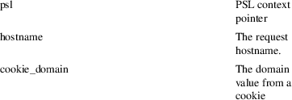
Returns
1 if acceptable, 0 if not acceptable.
Since: 0.1
psl_dist_filename ()
const
char *
psl_dist_filename (void);
This function returns the file name of the distribution/system PSL data file. This file will be considered by psl_latest().
Return the filename that is set by ./configure −−with−psl−distfile, or an empty string.
Returns
String containing a PSL file name or an empty string.
Since: 0.16
psl_get_version ()
const
char *
psl_get_version (void);
Get libpsl version.
Returns
String containing version of libpsl.
Since: 0.2.5
psl_check_version_number ()
int
psl_check_version_number (int
version);
Check the given version number is at minimum the current library version number. The version number must be a hexadecimal number like 0x000a01 (V0.10.1).
Parameters
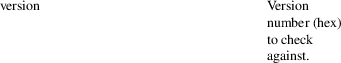
Returns
Returns the library version number if the given version number is at least the version of the library, else return 0; If the argument is 0, the function returns the library version number without performing a check.
Since: 0.11.0
psl_str_to_utf8lower ()
psl_error_t
psl_str_to_utf8lower (const char *str,
const char *encoding,
const char *locale,
char **lower);
This helper function converts a string to UTF−8 lowercase + NFKC representation. Lowercase + NFKC UTF−8 is needed as input to the domain checking functions.
lower stays unchanged on error.
When returning PSL_SUCCESS, the return value 'lower' must be freed after usage.
Parameters
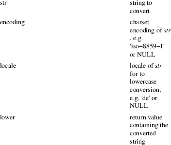
Returns
psl_error_t value. PSL_SUCCESS: Success PSL_ERR_INVALID_ARG: str is a NULL value. PSL_ERR_CONVERTER: Failed to open the unicode converter with name encoding PSL_ERR_TO_UTF16: Failed to convert str to unicode PSL_ERR_TO_LOWER: Failed to convert unicode to lowercase PSL_ERR_TO_UTF8: Failed to convert unicode to UTF−8 PSL_ERR_NO_MEM: Failed to allocate memory
Since: 0.4
psl_free_string ()
void
psl_free_string (char *str);
This function free()'s the memory allocated by psl_str_to_utf8lower() when returning a lowercase string
Parameters
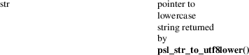
Since: 0.19
PSL_API
# define PSL_API __attribute__ ((__visibility__("default")))
PSL_VERSION
#define PSL_VERSION "0.21.2"
PSL_VERSION_MAJOR
#define PSL_VERSION_MAJOR 0
PSL_VERSION_MINOR
#define PSL_VERSION_MINOR 21
PSL_VERSION_NUMBER
#define PSL_VERSION_NUMBER 0x001502
PSL_VERSION_PATCH
#define PSL_VERSION_PATCH 2
PSL_TYPE_ICANN
#define PSL_TYPE_ICANN (1<<0)
PSL_TYPE_PRIVATE
#define PSL_TYPE_PRIVATE (1<<1)
PSL_TYPE_NO_STAR_RULE
#define PSL_TYPE_NO_STAR_RULE (1<<2)
PSL_TYPE_ANY
#define PSL_TYPE_ANY (PSL_TYPE_ICANN | PSL_TYPE_PRIVATE)
enum
psl_error_t
Return codes for PSL functions. Negative return codes mean
failure. Positive values are reserved for non−error
return codes.
Members
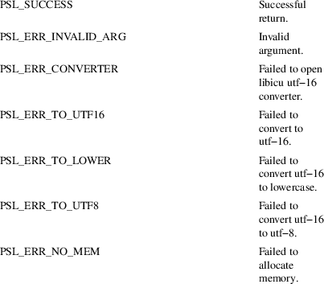
psl_ctx_t
typedef struct psl_ctx_st psl_ctx_t;
|
1. |
Public Suffix List |
https://publicsuffix.org/
|
2. |
Mozilla Public Suffix List |
https://publicsuffix.org
|
3. |
List |
https://publicsuffix.org/list